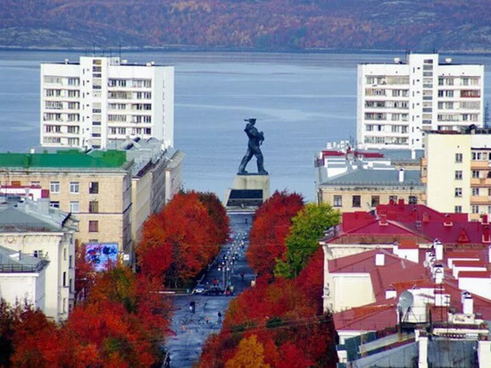
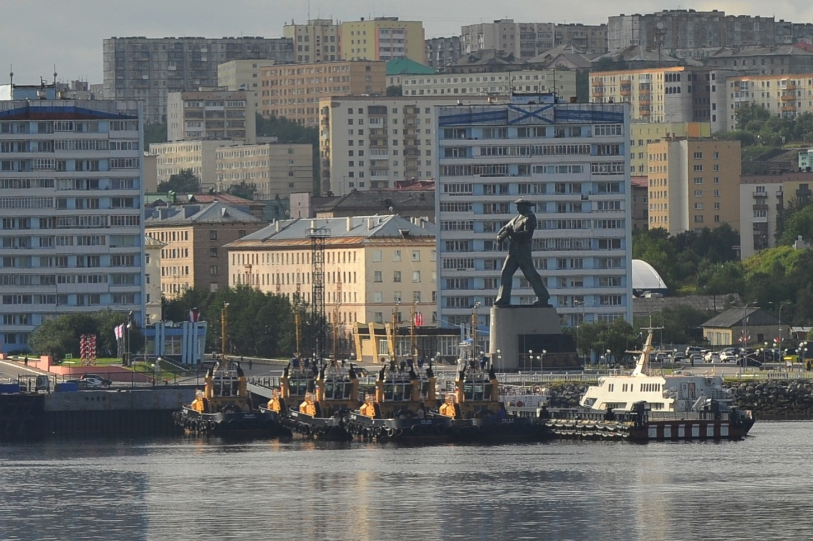

Меня зовут Евгений!
Хотелось бы рассказать немного о себе
и городах которые вошли в мою жизнь!
Знакомьтесь - это я. Как и все обычные люди, я имею страничку в соц.сетях
Ну ты заходи, если Чо!!!

Мои достоинства:
- всесторонне развитая личность (ну или стремлюсь к познанию нового)
- пунктуален (насколько это возможно)
- имею морское техническое образование и высшее строительное
- продолжаю расширять свой кругозор и в данный момент учусь на "Аналитика Dig Data"
- не употребляю алкоголь, от слова "совсем"
Мои недостатки:
- курю, бывает по многу. пока не могу ничего с эти поделать.
- ленив малость, иногда нужна "раскачка" что бы что то сделать
- ну и так, по мелочи...
Итак, первый город, который оставил неизгладимый след в моей жизни,
это конечно город детства, так сказать "малая родина"!
16 лет прожитых в мире детсва и молодости!
Знакомьтесь - Андреаполь, Тверская область.
Достоинства города:
- множество рек и озер (самая большая река протекает прямо в центре города: р. Западная Двина
- находится на достаточном удалении от крупных городов и производств
- окружен бескрайними лесами
- в общем для отдыха, то что надо
А это река Западная Двина. Исток реки находится недалеко от г. Андреаполь
Недостатки города:
- как и во множестве небольших городов, нет "нормальной" работы, низкий уровень з/п
- молодеж стремится уехать в большие города, т.к. нет развития города и см. п.1
- медицина, в "зачаточном" или "упадническом" состоянии, кому как будет удобнее прчитать
- да и множество других проблем, связанных с вышесказанным
Остатки былого величия литейной промышленности Андреаполя, разбросанные на просторах бывшего СССР
Следующий город, город моей юности и первого моего технического образования.
Город, где прошли мои юные курсантские годы.
г. Ломоносов (Ораниенбаум), Ленинградская область.
Достоинства города:
- очень красивый, чистый, ухоженный город
- множество исторических парков и сооружений
- находится на берегу Финского залива, что добавляет красоты и выгодности, т.к. имеется свой порт
- рекомендуется к посещению, наряду с самим Санкт-Петербургом, Петродворцом
и др. достопримечательностями
Главная достопримечательность-парк Ораниенбаум
Недостатки города:
- как таковых недостатков не обнаружил, т.к. давно уже там не был
- возможно "Питерский" климат не всем подойдет, зимой из-за повышенной влажности,
даже небольшой мороз ощущается намного сильнее, а летом душно, спасает только ветер
Финского залива (но это лично мои впечатления)
- ну и мой колледж, в котором провел 4 года жизни, почти перестал выпускать специалистов
Ломоносовский морской колледж Военно Морского Флота
Город основной моей жизни. Город где друзья, семья, работа.
Североморск - главная военно-морская база Северного флота России
и шестой по величине город за северным полярным кругом.
г. Североморск, Мурманская область.

Достоинства города:
- по своему красив и ухожен
- северные ягоды, грибы, красная рыба, красная икра и крабы-все это здесь
- нет "посторонних", т.к. город является закрытым и попасть можно только по пропускам
- тем кто плохо переносит жару - добро пожаловать!
Главная достопримечательность-это то, что во дворах можно увидеть припаркованный авианосец(шутка)
Недостатки города:
- кроме воинских частей, больше никакого производства в городе нет(не считая Мурманск)
- снег! много снега! дохренища снега! с конца сентября и по середину мая.
Зима. С середины дикабря и по середину января, солнце вообще не появляется
и потому, все вокруг серое и унылое.
Лето. Солнце не заходит с конца мая и по конец августа, без прибычки не уснешь.
- З/п выше чем в средней полосе, но и цены выше, потому бюджетники и сваливают отсюда

Моя работа
А что дальше? Планы, мечты!
г. Москва "В Москве вся сила брат!"
Достоинства города:
- Все лучшее Москве, этим все сказано
- уровень жизни, з/п, работа всегда найдется
- все трафики товаров идут через Москву, соответственно и ценник ниже чем в регионах
- есть все, начиная от интим-стрижки, заканчивая космосом
Главная достопримечательность-это... Ну вы в курсе.
Почва подготовлена, "берлога" куплена
Все про "берлогу"
Недостатки города:
- несомненно движуха и вечные пробки
- больше пока не знаю, возможно экология, но есть вариант выезжать в выходные из города
- много непонятных личностей, приехавших "на гастроли"
Возможно моя будущая работа
Где я всему этому научился?